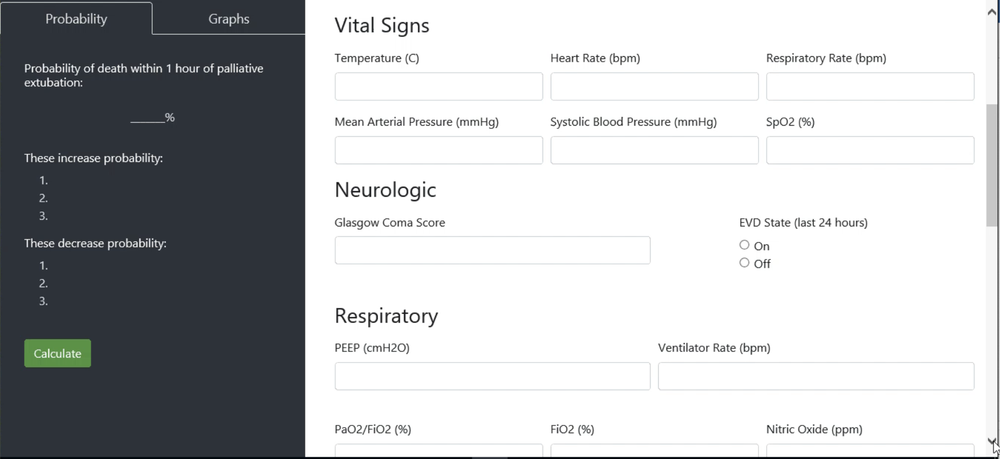

Premise
In the United States, the most common mode of death in pediatric ICUs is withdrawal of life support. This removal of life support is frequently the removal of ventilator support, also known as terminal extubation.
Doctors and families are often faced with questions regarding the end-of-life process including how long it takes for a family's loved one to pass away after terminal extubation. Knowing this information is invaluable in order to help with family planning, and if the family is willing, to identify potential candidates for organ donation. By partnering with palliative clinicians, machine learning models were trained to predict time to death after terminal extubation. This multi-institutional project resulted in a prototype tool that used the created model.

DONATE Web Application
I helped create the DONATE web application. This tool calculates the probability of death within 1 hour after terminal extubation. It allows a clinician to input readily available variables of the patient, and the tool also textually and graphically shows variables that increase and decrease this probability.
The 1 hour mark was chosen as:
- It best facilitates family planning. More deaths happen within 1 hour than not, and the tool allows family to know if they have time to go home, call other family members to the bedside, etc.
- Patients who die within one hour are eligible for organ donation, wheras those who die later are typically not. One hour is the ischemic time recommended by United Network for Organ Sharing (UNOS). It is also the most common time period institutions use if they practice organ donation after circulatory death.